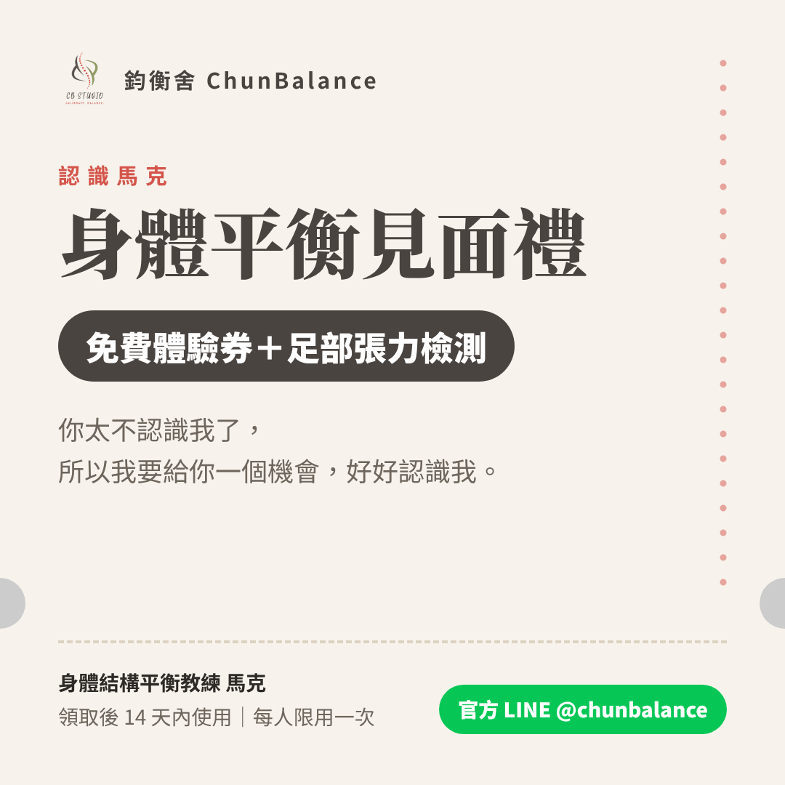

鈞衡舍 ChunBalance
你有多認識
馬克
？
10 題三選一，不難。
答完都有一份身體平衡體驗送你。
答對 8–10 題：「身體平衡招待券」
答對 5–7 題：「身體平衡邀請卡」
答對 0–4 題：「身體平衡見面禮」
開始
下一題

① 存下來
② 傳到官方 LINE 領取
考考朋友
再玩一次
存下圖片，傳到官方 LINE「鈞衡舍」，馬克會幫你安排
鈞衡舍官網 chunbalance.com ›